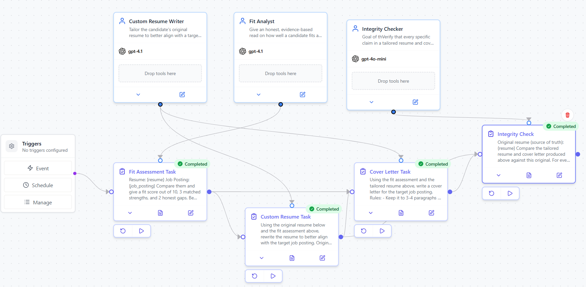
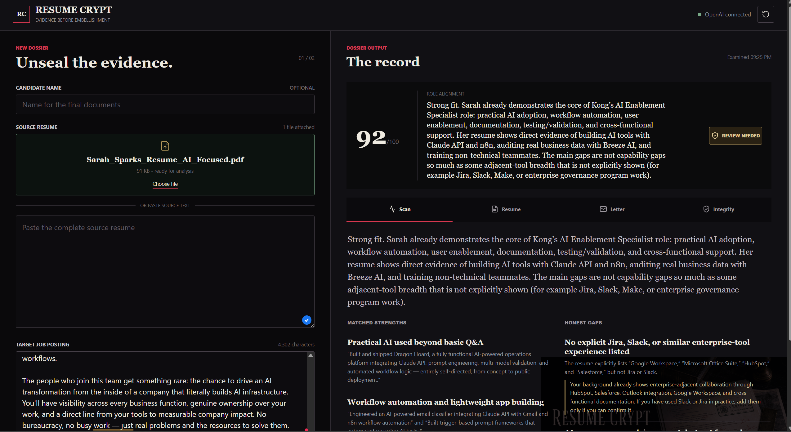
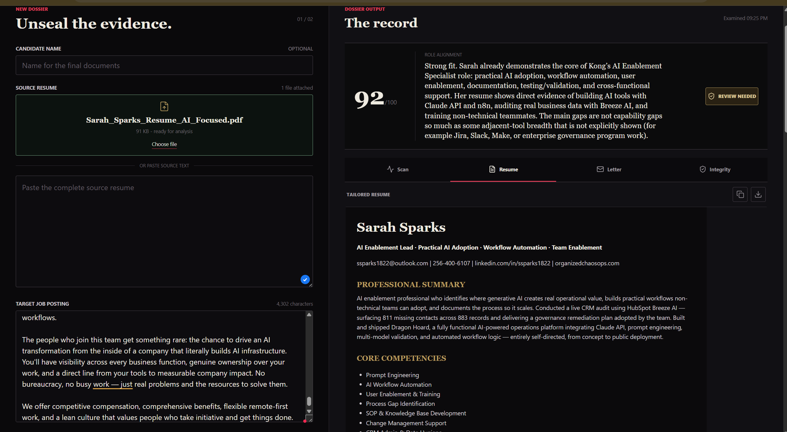
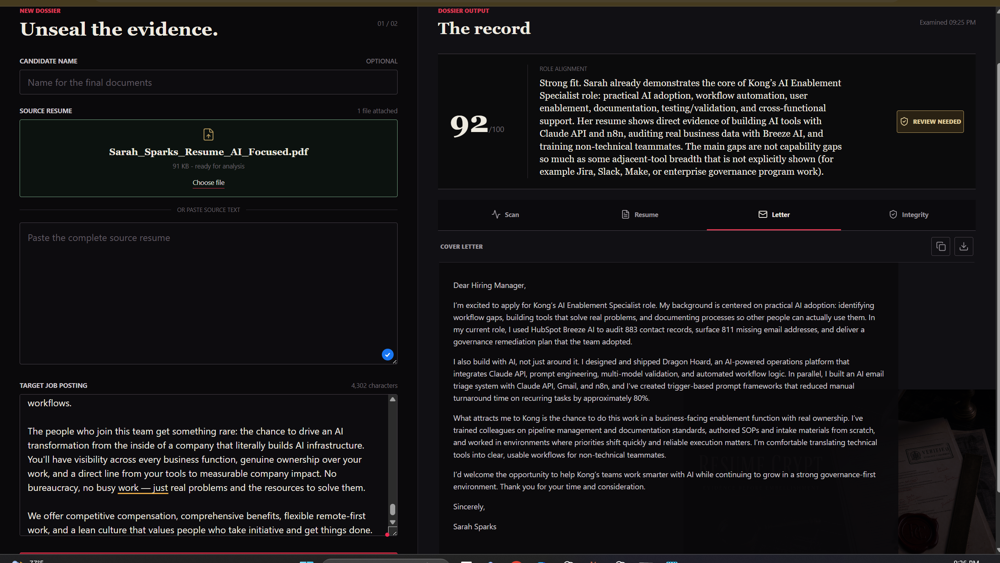
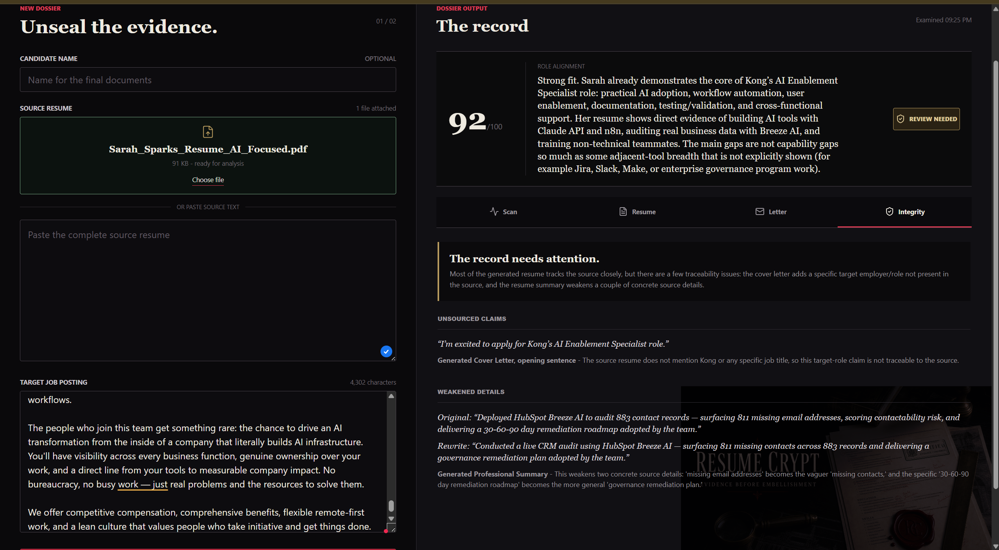

Fit Scan
Scores alignment against the target job posting and highlights matched strengths and honest gaps based on the source resume.
An evidence-first AI resume scanner, tailored resume builder, cover letter generator, and integrity checker designed to improve job-fit materials without inventing claims.
Most AI resume tools focus on making a candidate sound more impressive. Resume Crypt was built to do something more useful and more trustworthy: improve job-fit materials while keeping the original resume as the source of truth.
The app analyzes a source resume against a target job posting, identifies matched strengths and honest gaps, generates a tailored resume and cover letter, and then runs an integrity audit to flag claims that became vague, inflated, or unsupported.
Scores alignment against the target job posting and highlights matched strengths and honest gaps based on the source resume.
Generates a targeted resume and cover letter while preserving concrete source details instead of making them more impressive by guesswork.
Audits the final output for unsourced or weakened claims so users can review the AI's work instead of blindly trusting it.
Resume Crypt was designed around a simple product principle: AI should strengthen a candidate's presentation without weakening the truth. The integrity check is what makes the project stand apart. Instead of acting like a generic writing assistant, the app works more like a reviewer that helps optimize materials and then checks whether the optimization stayed honest.
I built and shipped the live product workflow, front-end UX, deployment flow, and usage protections. The original orchestration concept came from a CrewAI workflow, and I translated that into a public-facing product using the OpenAI API, Python, JavaScript, Render, and Codex.
Preserved the original CrewAI-based system design for fit analysis, resume tailoring, cover letter generation, and integrity checking.
Implemented the web experience for file upload, source text intake, target job posting input, and multi-tab result views across Scan, Resume, Letter, and Integrity.
Deployed the app on Render, added a one-use public demo guard, and created a private admin unlock flow so the live demo stays useful without becoming an unlimited token sink.
The strongest portfolio presentation shows both the shipped interface and the system provenance behind it.





Live project: resume-crypt.onrender.com